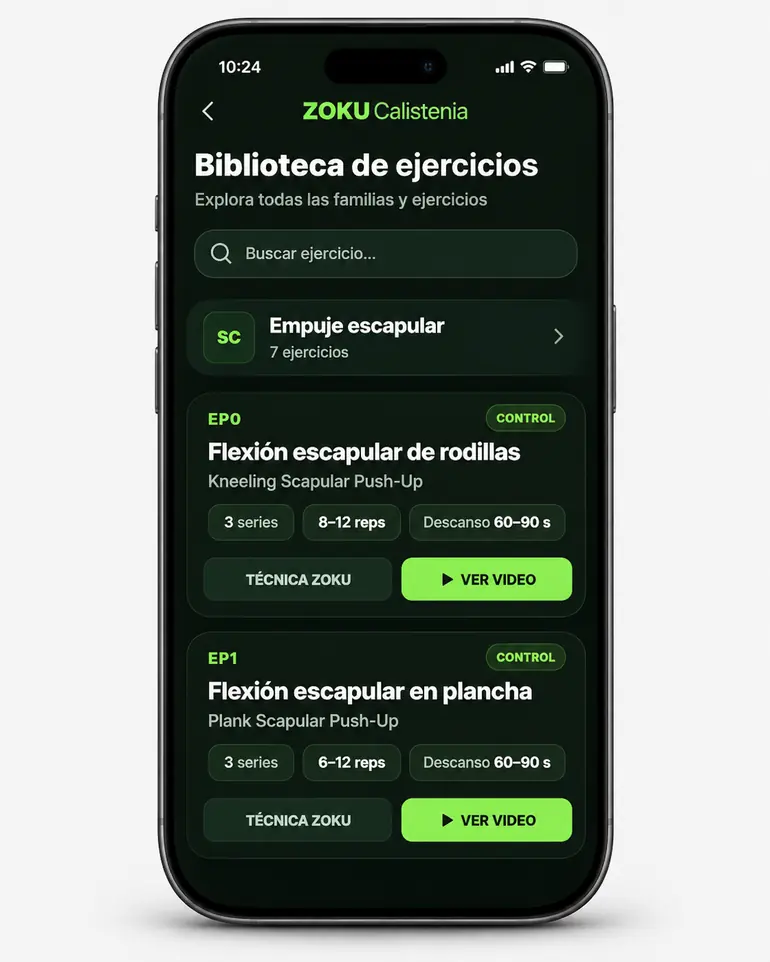
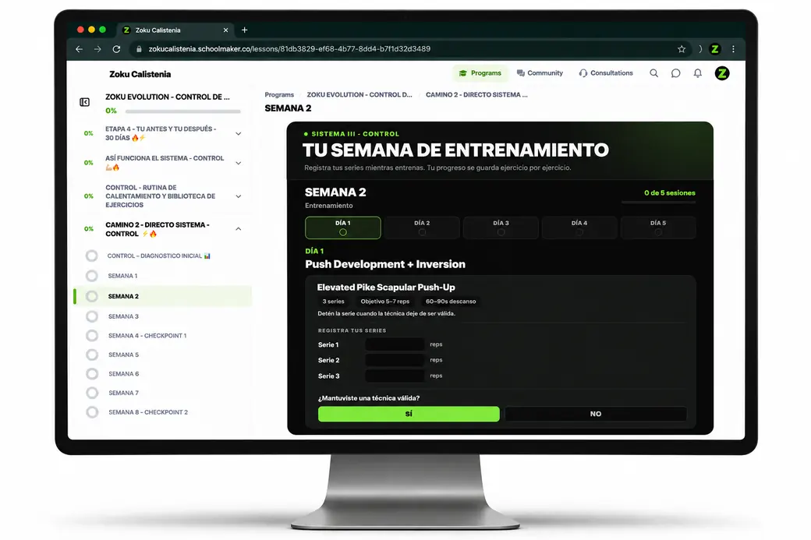
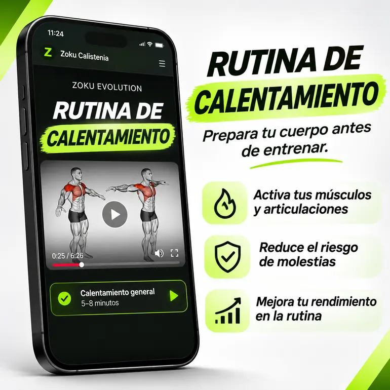
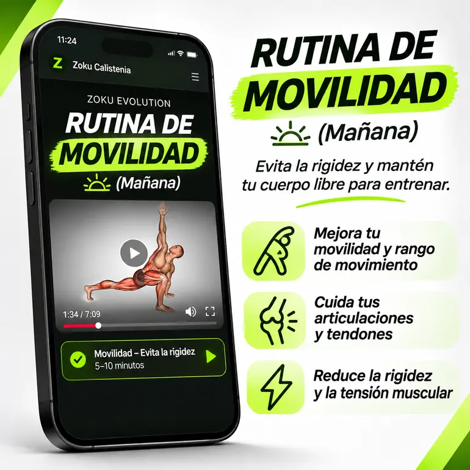
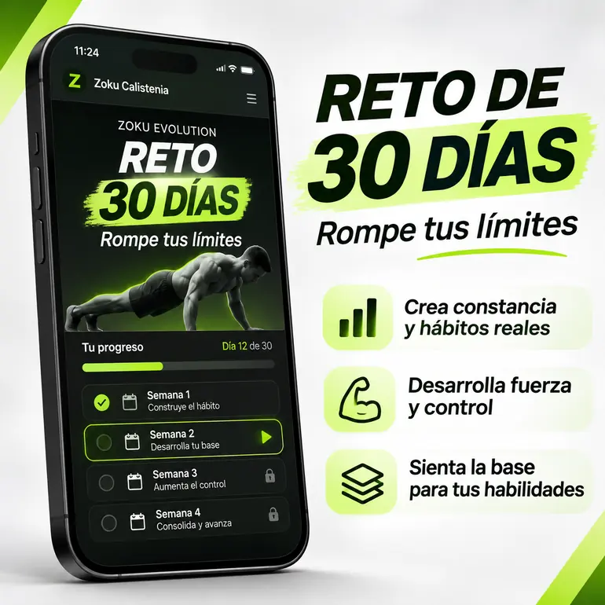
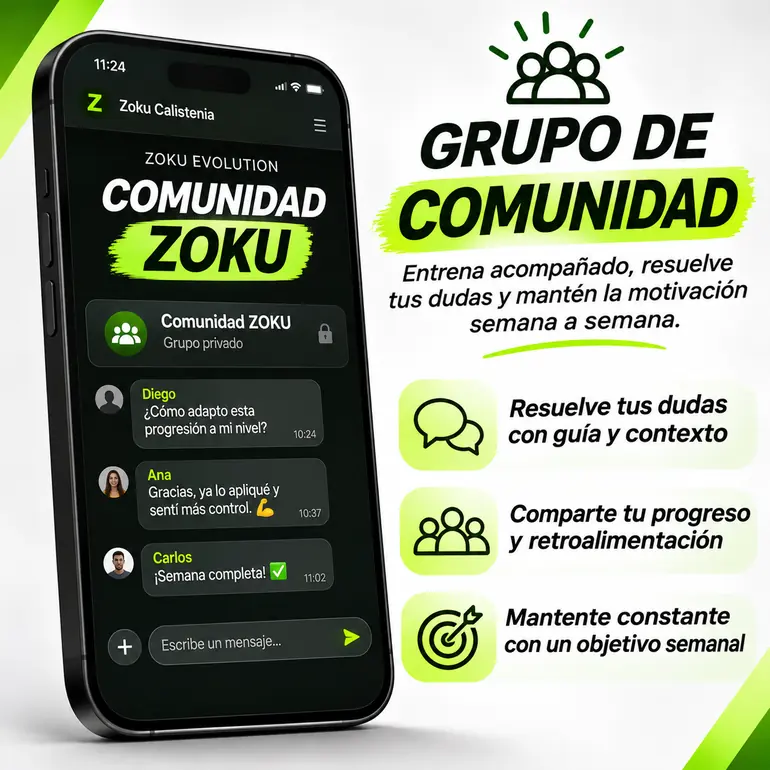

Biblioteca de ejercicios
Consulta cómo se realiza cada variante y revisa técnica y videos cuando te surja una duda.
Desarrolla fuerza, estabilidad, tensión y control para avanzar hacia L-sit, handstand, front lever y planche, incluso si aún no sabes hacerlas. No necesitas cuatro rutinas diferentes para empezar a construir las bases.

Porque una habilidad no depende solo de intentar su posición final. Tu cuerpo necesita fuerza para sostenerse, estabilidad para organizarse y control para mantener cada movimiento. Al trabajar esas bases durante la semana, puedes prepararte para distintas habilidades sin improvisar un entrenamiento nuevo cada día.
No tienes que elegir ejercicios ni calcular por tu cuenta cuándo cambiar de nivel.
En tu primer mes puedes empezar a reconocer mejor los apoyos, mejorar tu estabilidad en algunas posiciones y comprender qué necesitas trabajar. El ritmo de progreso es individual; no necesitas conseguir una habilidad completa en 30 días.

Todo en el mismo programa. Son apoyos para tu proceso, no tareas que tengas que completar todas a la vez.

Consulta cómo se realiza cada variante y revisa técnica y videos cuando te surja una duda.

Prepara articulaciones y músculos antes de las sesiones, sin complicarte la entrada al entrenamiento.

Una rutina breve y opcional para mover el cuerpo y trabajar tu rango de movimiento.

Una opción adicional si quieres construir constancia y retomar el hábito de entrenar.

Comparte tus avances, consulta ejercicios y mantén un objetivo semanal acompañado por la comunidad.
Quieres fortalecer tu cuerpo y avanzar hacia varias habilidades sin dedicar toda tu rutina a una sola. Estás dispuesto a practicar desde tu nivel y registrar tus avances.
Quieres dedicar todo tu tiempo a conseguir una única habilidad lo antes posible. ZOKU Control desarrolla capacidades que se complementan; no es una especialización exclusiva en un solo skill.
En lugar de preguntarte cada semana qué ejercicios deberías hacer, tendrás un proceso desde tu punto de partida. Lo importante no es dominarlo todo hoy, sino saber qué trabajar después.
No. Empiezas con un test y progresiones acordes a tu nivel. Son habilidades hacia las que puedes trabajar, no requisitos para entrar.
El sistema propone cinco sesiones a la semana, de entre 20 y 40 minutos según el día. Debes considerar también tu descanso y otras rutinas que ya realices.
Puedes complementar el trabajo específico de control si ajustas la carga total y la recuperación. No se trata de sumar cinco sesiones sin considerar lo que ya entrenas.
Durante las primeras semanas puedes empezar a reconocer mejoras en control, estabilidad o ejecución. No hay una fecha garantizada para conseguir una habilidad; cada proceso es diferente.
El checkout de SchoolMaker ya está configurado en $29 USD al mes: no tienes que aplicar un código promocional. Sigue el proceso de correo y cuenta; cuando ingreses, realiza tu test inicial y comienza con tu semana.